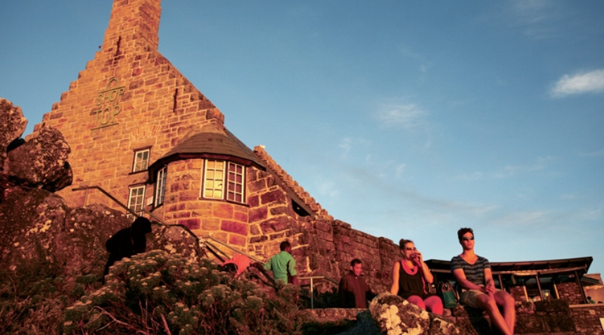
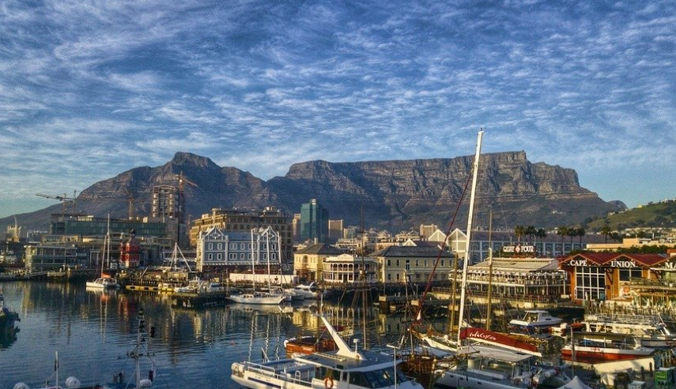
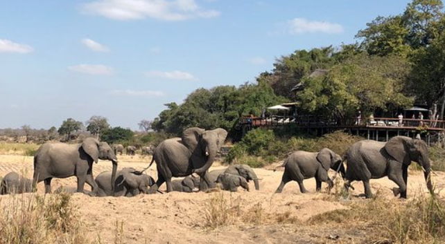
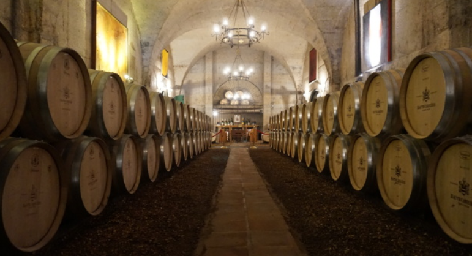
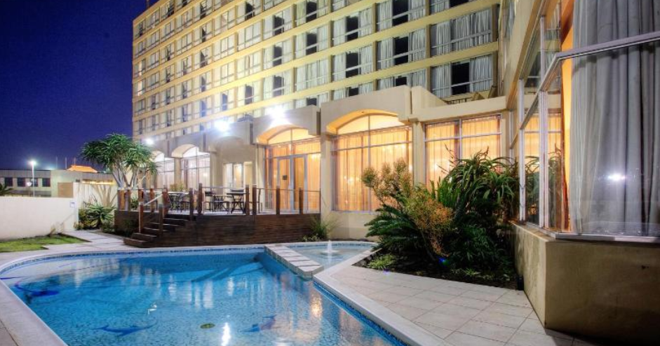

1. Africa
무지개 나라, 남아프리카 공화국
▶ 여행시기: 5월 ~ 9월
▶ 추천 장소
|  | 유럽의 고풍스러운 분위기가 물씬 풍기는 빈티지풍 거리, 이탈리아 토스카나에서나 봤음직한 와인 루트와 서핑의 천국으로 불리는 아름다운 바다. 남아공에선 이 모든 것을 유럽이나 미국 여행보다 훨씬 저렴한비용으로 만끽할 수 있다. 아프리카 내륙 국가보다 시원하고, 1년 중 200일 이상이 맑은 화창한 기후를 보인다. |
|  | 특히 케이프타운은 여름에도 평균기온이 30˚C를 넘지 않아 서핑이나 하이킹 등의 액티비티를 즐기기 좋다. 또한, 때 묻지 않은 자연을 어디서나 발견할 수 있다. |
|  | 수십 종의 야생동물을 만날 수 있는 크루거 국립공원은 말할 것도 없고, 케이프타운이나 요하네스버그 등의 대도시에서도 타조나 원숭이 등의 야생동물을 자주 볼 수 있다. 사파리 하면 케냐의 마사이마라나 탄자니아의 세렝게티가 떠오를 지 모르지만, 남아공의 크루거 국립공원 역시 아프리카의 야생을 있는 그대로 체험할 수 있는 곳으로 유명하다. 아프리카 사파리의 대명사로 불리는 세렝게티 국립공원보다 넓고, 마사이마라 국립공원보다 다양한 동물을 만날 수 있는 남아공의 대표 국립공원. 규모가 상당히 넓기 때문에 최소 2~3일 이상 묵으며 천천히 둘러보는 것이 좋다. 공원 내부에 마련된 캠프와 로지는 야생 속에서 하룻밤을 보낼 수 있는 유일한 방법이기에 관광객이 많이 이용하는 편이다. |
|  | 17세기부터 생산하기 시작한 남아공 와인은 지금은 세계 어디서나 찾을 수 있을 정도로 높은 품질을 인정받고 있다. 남아공 최대 와인 생산지인 스텔렌보스의 와이너리들 역시 세계 어느 와이너리에 뒤지지 않는 훌륭한 시설과 아름다운 풍경을 자랑한다. 1692년에 설립된 남아공에서 가장 오래된 와이너리인 테이스팅룸은 멤버십이 있거나 예약을 통해서만 입장이 가능하며, 20km2넘는 와이너리 부지엔 호텔, 스파, 레스토랑뿐만 아니라 19세기 미술품들을 감상할 수 있는 갤러리와 각종 유물이 전시된 박물관도 함께 마련되어 있다. 세계 랭킹 1위까지 오른 남아공의 전설적인 골프선수 어니 엘스가 설립한 와이너리. 가장 많은 양의 와인을 생산하고 각종 매체에서 1위로 선정될 만큼 최고의 시설을 자랑한다. |
|  | 아프리카에서 가장 부유한 국가인 만큼 관광객을 위한 훌륭한 시설과 서비스를 경험할 수 있다. 어느 도시에서나 훌륭한 레스토랑과 수준급 호텔을 찾을 수 있고, 대중교통과 도로도 비교적 잘 갖춰져 있어 여행하는 데 전혀 불편함이 없다. |